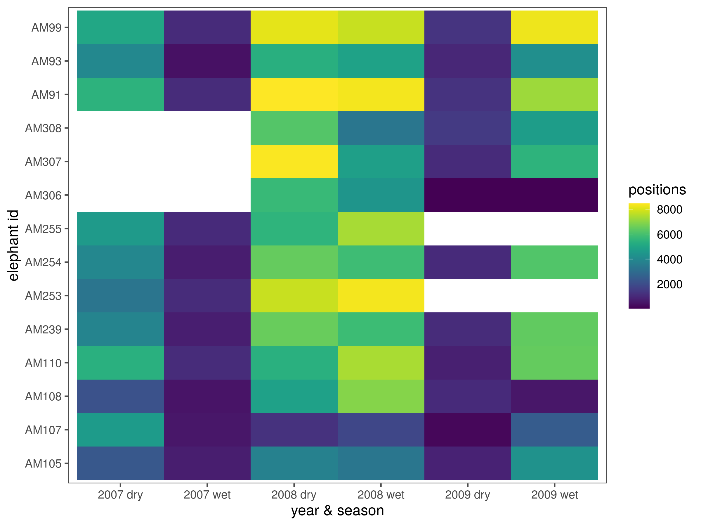
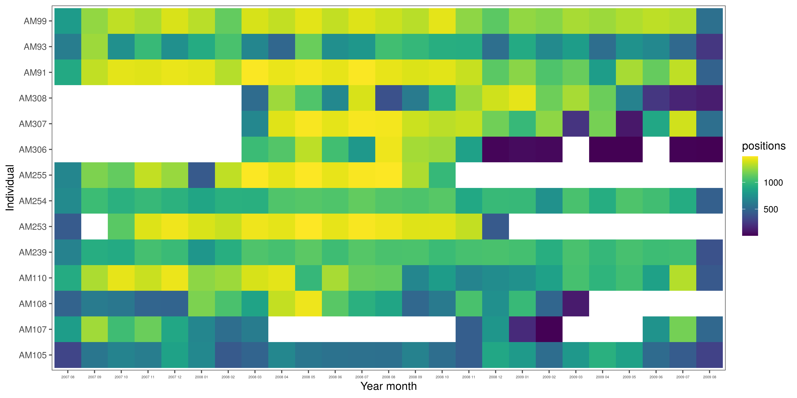
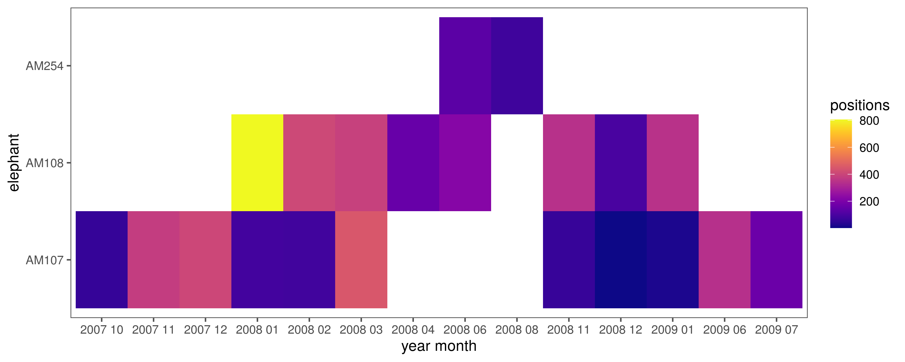

Section 3 Supplementary material
This section explores the data in brief as supplementary material to the paper.
3.1 Load libraries
3.2 Load data
# load the preliminary data
ele.dry = read_csv("data/ele_data/ele.dry.csv")
ele.wet = read_csv("data/ele_data/ele.wet.csv")
# combine to form a single dataset with seasons assigned
ele.dry$season = "dry"
ele.wet$season = "wet"
#'rbind the data
ele = bind_rows(ele.dry, ele.wet)
# susbet columns and rename
ele = ele %>%
select(id = ID, ref = REF, long = LONGITUDE, lat = LATITUDE,
temp = TEMP, season, xutm = XUTM, yutm = YUTM,
time = Date_time, landscape = landsca, land.val = VALUE,
density = DENSITY, woody.density = `woody density`,
veg.class = VEG_CLASS, gertcode = Gertcode, v = STEPLENGTH,
angle = TURNANGLE, heading = BEARING,
distw = dist_water, distr = Dist_river)
#'change time to posixct via char
ele$time = as.POSIXct(as.character(ele$time), tz = "SAST", format = "%d-%m-%Y %H:%M")
# add hour and change column types
ele = ele %>%
mutate(hour = hour(time), season = as.factor(season),
gertcode = as.factor(gertcode))3.3 Data distribution in time
3.3.1 Seasonal summary
# how many positions per elephant per year and season
data_season_summary = ele %>%
group_by(year_season = paste(year(time), season, sep = " ")) %>%
count(id)
# make figure
fig_season_summary = ggplot(data_season_summary)+
geom_tile(aes(x = id, y = year_season, fill = n))+
scale_fill_viridis()+
theme_few()+
labs(x = "elephant id",y = "year & season", fill = "positions")+
coord_flip()
# save figure
ggsave(fig_season_summary, filename = "figs/fig_season_summary.png",
width = 8, height = 6)
3.3.2 Monthly summary
# positions per elephant per month and year
data_month_summary = group_by(ele,
year_month = glue('{year(time)} {str_pad(month(time), width = 2, pad = "0")}')) %>%
count(id)
# make figure
fig_month_summary = ggplot(data_month_summary)+
geom_tile(aes(x = id, y = year_month, fill = n))+
scale_fill_viridis()+
theme_few()+
theme(axis.text.x = element_text(size = 4))+
labs(fill = "positions", x = "Individual", y = "Year month")+
coord_flip()
# save figure
ggsave(fig_month_summary, filename = "figs/fig_month_summary.png",
width = 12, height = 6)
3.4 Elephants near the weather station
Which elephants are within 10 km of the weather station at Skukuza, and when?
3.4.1 Load Skukuza
The weather station at Skukuza (24.9 S, 31.5 E) is our source for ambient temperature data.
3.4.2 Select elephants within 10 km
3.4.3 Get distribution over time
#'which eles are here and over which months?
data_tower_summary = group_by(ele_tower,
year_month = glue('{year(time)} {str_pad(month(time), width = 2, pad = "0")}')) %>%
count(id)
# make figure
fig_tower_summary =
ggplot(data_tower_summary)+
geom_tile(aes(x = id, y = year_month, fill = n))+
scale_fill_viridis(option="C")+
theme_few()+
labs(fill = "positions", x = "elephant", y = "year month")+
coord_flip()
# save figure
ggsave(fig_tower_summary, filename = "figs/fig_tower_summary.png",
width = 10, height = 4)